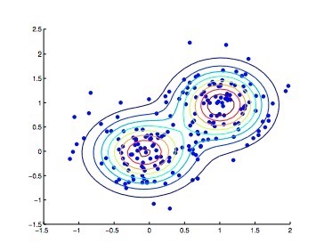
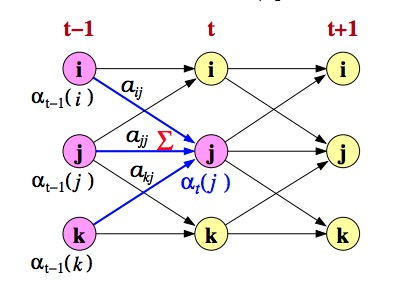
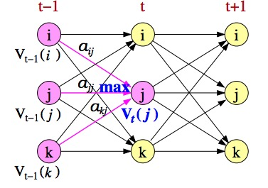
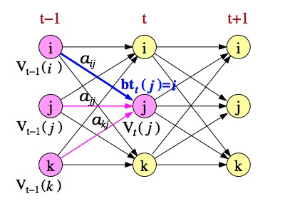
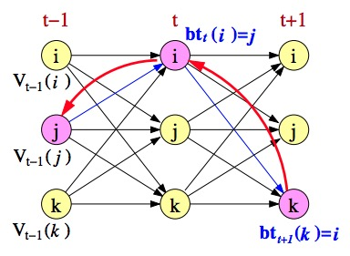
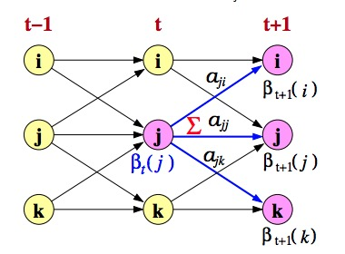

GMM-HMM模型（理论篇）
语音识别有一条最基础的公式：
这条公式使用了贝叶斯公式，把语音识别分成了两个部分。一部分是声学模型，一部分是语言模型。直观地理解，就是估计一个词，使得公式右侧的结果最大化。这个公式，可以粗略理解成一个模型。我们希望得到的结果是：在当前的语音X之下，我们输入一个词W，它能使得这个模型取得最大的值。而拆分来看，前者就是声学模型，后者就是语言模型。
这个语音数据X指的是MFCC特征，是一个vector，而不是语音信号本身或者语音频谱本身。所有的工作都是在提取了这个特征的基础上做的。我们希望能够通过一系列的语音数据的vector训练出一个模型。这个模型能够在我们给了它一个语音vector之后，判断出这段语音的内容。判断的过程被成为decode。
结合上面的内容，声学模型作用就是：找出符合的音。然而，语言当中存在着大量的同音字，同音的片段。找出符合的音还不够，我们还需要找到符合的字。而语言模型的工作就是这个。
本文会介绍声学模型的细节和原理。这个模型是GMM-HMM。虽然这是一个比较有历史的模型，效果比起现在的DNN-HMM等肯定是差了不少。但是，这不妨碍我们学习它。这一个模型的实现结合了机器学习相关的非常多的知识点，其实是非常有意思的。
我希望能够写得尽量浅显，但如果文章有所疏漏或者错误，恳请指正。
1 直观了解两个算法
在正式进入介绍GMM-HMM模型之前，先直观介绍两个常用的机器学习算法。在这里不会深入探讨细节，只关注最直观的原理和使用方法，仅让读者能有个概念的印象。想要深入了解的话，可以查看《统计学习方法》的相关章节或者查看一些其他的博客。
1.1 EM算法
EM算法在《数学之美》中被作者称为上帝算法，由此可见它的威力和魅力。
这个算法想要解决的问题是，当模型含有隐变量的时候，如何求得概率模型的极大似然估计。举个例子来说，我有三个罐子，罐子里有黑球和白球。每一个罐子里的黑白球都有各自的概率分布。我按照一个概率的规则，选一个罐子。然后把手伸到选好的罐子里面拿出一个球。重复上面的操作，我能够得到一个黑白球的一串序列。把这个序列称为输出序列O。
下面的问题是，我如何通过这一串序列，推测出每一个罐子里的概率分布的最大可能性，怎样推测出，我最有可能按照什么规则来选择罐子的。
EM算法就能回答这个问题。它把这个问题给分成了两个步骤。估计步骤和最大化步骤。
一开始，我们先初始化一些参数。这些参数包括两个部分：每一个罐子里面黑白球的概率分布，以及我选择罐子的规律（或者说概率，比较合适）。
然后，在当前的获得的序列，和当前估计的参数之下，我们要计算一个期望值。我当前估计的选择罐子的这套规律之下，对取到这一个序列O的期望（Q函数）（E-step）。
之后，我们再通过最大化这个我们得到的期望值。得到一组新的参数（M-step）。我们把新的参数放入上一步的构建当中，一直到Q函数或者估计参数收敛为止。
如果上面说的比较难以懂，可以这样理解：我们根据当前参数，构建最大似然估计一个下界。然后再最大化这个下界。这就是EM算法了。这样的操作过后，我们就得到了最终的估计，也就是说，最有可能的一个估计。
这样，我们就获取到了所有的参数，得到了整一个模型。
EM算法应用广泛，下面的K-means算法和GMM的算法都是他的应用。
1.2 K-means算法
K-means很容易理解。我们可以通过这一个算法，把一个空间中的vectors分成若干聚类。具体的算法步骤很好理解，就在下面展示出来。
随机初始化一些聚类的重心。
遍历每一个点，把点归属到距离它最近的那个重心的类别里。
遍历每一个重心，通过它类别里面的点重新求出均值，得到新的重心。
不停循环上面的的步骤2,3，直到收敛。
以后如果有机会，会开一篇博客用代码详述。
2 GMM
2.1 什么是GMM
高斯混合模型是混合模型的一种形式。其中的概率密度是一个高斯分布。它总体的概率分布就是把每一个高斯分布按照一定参数累加而成的。下面的公式就是GMM。在不同权重之下的高斯模型的累加。
2.2 如何训练GMM
什么是训练GMM呢？我们可以这样理解，给出一系列的点，希望能够有一个模型能够去拟合它们。而这明显地，是一个有隐性变量的概率分布（我们并不知道得到的点是从哪一个高斯分布来的）。因此我们可以用EM算法去训练出它的模型。
这一个模型有三个（组）重要的参数：混合参数，高斯的均值，高斯的方差。训练模型，就是得到这三个（组）参数的过程。这里的组数指的就是隐变量的个数。
我们先假设，我们知道我们的数据是哪一个高斯生成的。我们慢慢地数，可以得到这样的一系列参数。
但问题是，我们不知道一个数据点是来自哪一个高斯分布的。不知道分布，至少，要知道概率是多少。这里，我们可以用一个后验概率来表示。
这一个概率被成为Component Occupation Probabilities。表示的含义是，当前数据点x属于高斯m的概率。用EM的说法就是，当前数据点属于某一个隐变量的概率是多少。
下面，我们可以用这一个概率把参数都表示出来了。
整一个算法的流程如下：
初始化参数
使用估计的参数计算概率（就是Component Occupation Probabilities）
通过刚刚估计的概率分布，进行参数的估计（就是上面的公式）
重复2,3，直到收敛
下面的图就展示出了训练获得的GMM模型。

3 HMM
马尔科夫模型考虑的问题是转移概率的问题，而隐性马尔科夫模型考虑的问题是，对于每一个状态，各自有一个隐性概率分布的情况下，相关的问题。
与上面提到的EM算法的例子相似的是，我都要通过一个隐性的规则，先去选择罐子，然后再到罐子里面拿球。差别是，我这一套隐性的规则，不再是单纯的通过一个规律来选择。每次选完一个罐子，我都需要根据一个矩阵来决定下一个我要用的罐子。这个矩阵叫做转移概率矩阵。
这里的含义就是，从状态i到j的转移概率。
我有三个罐子，A，B和C。我第一次把收根据pi的概率选择一个罐子，然后拿一个球（根据罐子里面球的分布b），然后根据转移概率矩阵A，再选择一个罐子。拿一个球。不停重复，获得一个观察序列O。每一个观察序列上的点都来自一个状态，即来自哪一个罐子。这个状态的序列标记为Q。
参数主要就是转移概率矩阵A，球在罐子里的分布b，选择的罐子的分布。我们把它记为 。
下面，我们要解决三个问题。这三个问题是是整个GMM-HMM模型的核心。下面我们就来探索一下这三个问题。
3.1 Likelihood
我们拿到了观察序列O，我们也知道了整个模型。想要求得在这个模型下，我得到O的概率是多少。
知道这个问题的解决方案的好处是：如果我有两个用来识别”Hello”的模型，我想知道哪一个模型更好，只要分别求得这两个的概率，一对比就知道了。
从最直接的想法来说，可以把所有路线都走一遍。这种方法复杂度太高，不实用。我们可以选择使用一个更好的方法：前向算法。
定义：已知观察序列X，那么，在时间t的时候（此时的观察序列对应的点为），状态为j的概率是：
算法的具体流程如下：
- 初始化
- 循环
这是最核心的一步。通过递归的方法，可以求得，对一个时间t，状态j的概率是前面一个时间t-1的全部可能性转移到当前状态的概率的累加。简单理解是：前一个步骤的每一个时间点的每一个状态都出色完成了自己的任务（生成xt-1）,要把这些可行的路线的可能性都综合起来。
通过下面的图可以更加清晰地了解。

- 终止
3.2 Decoding
现在知道了观察序列O和模型 我想猜测出最有可能的状态序列Q。这一个问题的用处在于：我们可以根据当前的一串数据，推测数据的状态来源。我有一条语音信号，也选好模型了，我想通过模型把语音信号解码出来。
这一个问题和上一个问题的算法很相似，因为事实上他们面对的问题也有很高的相似性。差别只在于，我在解码的时候，我只会走最好的一条路，而求似然性，则是全局的。
解码这一个步骤最常用的算法是经典的维特比算法。算法的思想如下所述：在一个时间t，状态是j，我们想知道走到这一步最有可能的路线，就要看到达上一个时间点的每个状态的可能性。到达当前点最有可能的路线，就是到达前一个状态最有可能的路线乘上前一个状态过来的可能性最大的那条路线。
打个比方，旅行者想去G城，要途径A，B，C城。他想要快点到达G成，要考虑两个问题，我到达A，B，C要多久，A，B，C三个地方出发到G城要多久。而我想知道到达A城最快要长时间，就要看A城前面的情况。这里就发生了递归。通过递归，我们也能找到一条最好的解码路径。
这么说或许有点复杂，结合公式和图就能很好地理解了。
- 初始化
- 循环


- 终止

为了最后得到那一条路线，我们在算法进行的过程中可以顺便把前一个的状态记录下来。这里就用来一个指针，可以在最后回溯。
3.3 Training
最后一个问题是，知道了观察序列O，或者说大量的观察序列O，我们要怎样获取这一个模型。
这个问题是最难的一个问题。把这个问题具体化，事实上就是通过训练序列O，找到使得相同的语音数据输入的时候，这个模型能够给出最大的似然估计。我们需要的隐变量既包括每一个状态的概率分布参数，又包括整体的状态转移矩阵参数。因此这又是一个EM算法的问题。
这里，我们做一个假设，把每一个状态的概率分布近似城混合高斯模型。在这个假设下，我们的整一个算法，就可以非常直观地看成是上面GMM算法的一个延神。GMM的EM算法，隐变量只有”属于哪一个高斯“这一点。而这里的EM算法，包括了下面三个隐变量：我要选择哪一个状态，选好状态（都假设为GMM了）之后的结果属于哪一个高斯分布，转移去的下一个状态是什么。
类似GMM算法，我们也需要知道，某个时间点是某一个状态的概率，以及，t时刻是某个状态到t+1时刻是某个状态的概率。这两个概率的表示都是我们EM算法中E-step要使用的。
3.3.1 后向算法
为了得到这两个概率，我们要引入后向算法。
后向算法与前向算法类似。不过差别在于，前向算法是，假设前面都符合要求，当前时刻属于某个特定状态，也符合要求，的概率是多少。而后向算法则是，假设后面的时刻都符合要求，当前时刻也符合要求，的概率是多少。
（这里的符合要求指的是符合输出序列的值。）
算法的过程如下所示：
- 初始化
这里的初始化为1，是因为当到达最后的时候，我假设当前符合要求，后面已经没有其他的状态了，因此必然符合要求。
- 循环
这一步与前向算法类似，通过递归，从后往前算。

- 最后（从正常顺序来说，是最前。）
3.3.2 BW算法
后向算法的作用，是它能够和前向算法配合，表示出上面所讲的两个概率。
对于一个序列来说，在t时刻属于状态j的概率（我们称之为state occupation probability，类似GMM的情况），这里可以表示为：
对于一个序列来说，t时刻由i状态转移到j状态的概率，我们可以表示为：
而此时，考虑一个相对简单的情况，即状态的分布为单高斯的情况。需要估计的参数就可以根据上面的两个概率表示出来。
EM算法的两个步骤，到此就可以表示出来了。
- E-step
- 前向算法计算和后向算法计算
- 计算上面说的两个概率,
- M-step
- 通过E-step估计的概率进行参数的迭代。这里的参数包括, ,
重复上面的EM步骤，直到收敛，模型就训练完毕了。
如果从刚刚的假设中跳转到真实的情况里，即，使用GMM而不是单高斯的情况时，有一些参数需要进行调整。
假设，对于每一个循环的均值来说，需要考虑向量落在哪一个高斯分量中，因此需要做如下的修改。
而GMM的参数也需要不停地迭代，来重新调整模型。下面就是GMM参数调整的公式。
4 最后
到这里，GMM-HMM模型涉及的所有理论都已经讲述完毕。之后会写一篇文章来详细说说，怎样把这些算法用起来。
5 学习资料分享
- 爱丁堡大学语音识别课课件 https://www.inf.ed.ac.uk/teaching/courses/asr/
- 雷锋网的一篇科普文章 https://www.leiphone.com/news/201609/ujyg57ZsXcl9Dipg.html
- 一个HMM的相关教程 http://www.kanungo.com/software/hmmtut.pdf
- 经典 The Application of Hidden Markov Models in Speech Recognition
本文所有图片来源于爱丁堡大学语音识别课件。